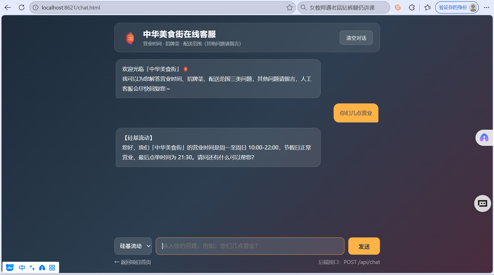
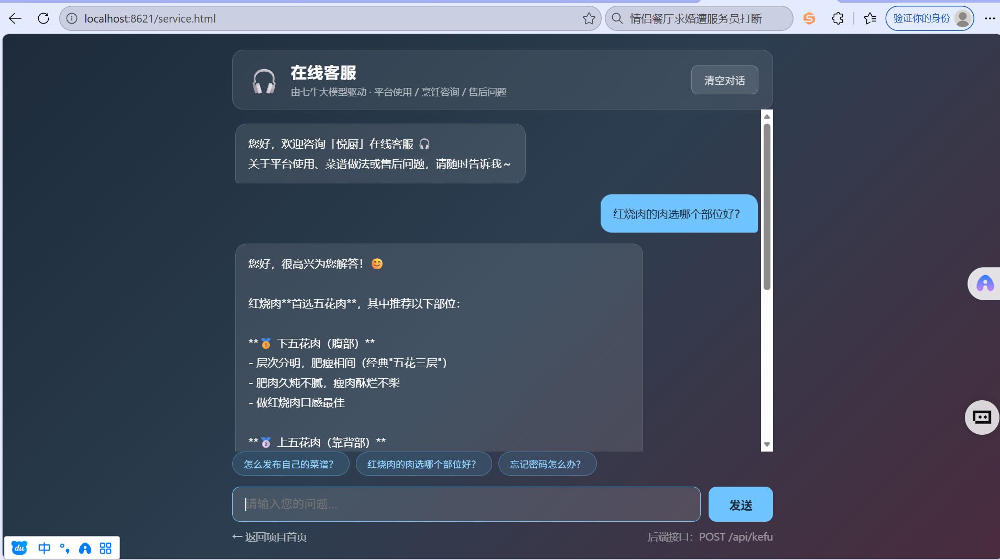
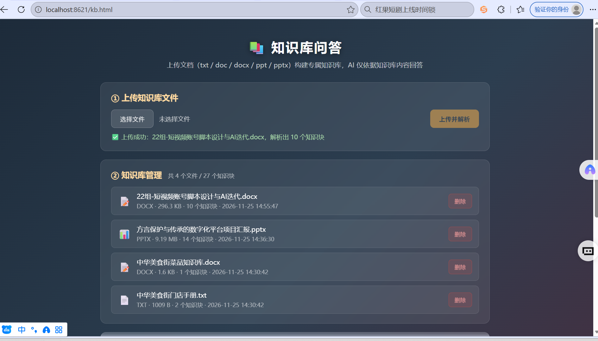
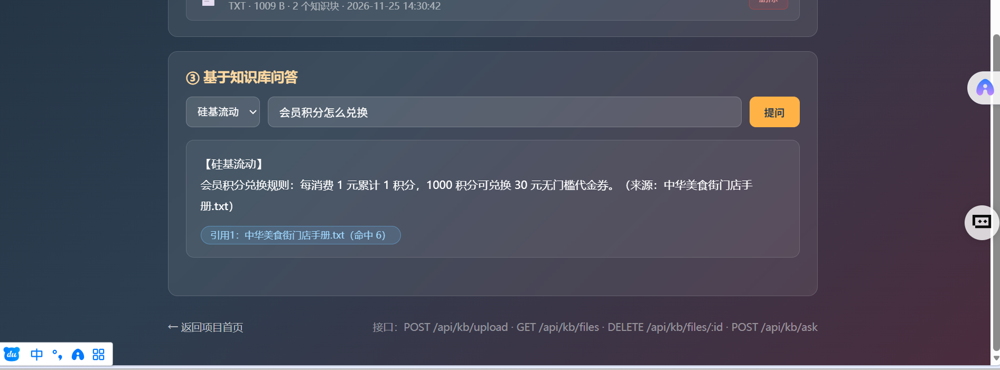
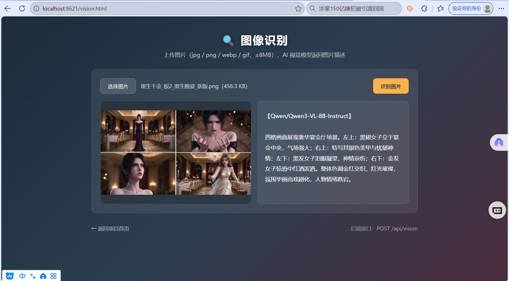
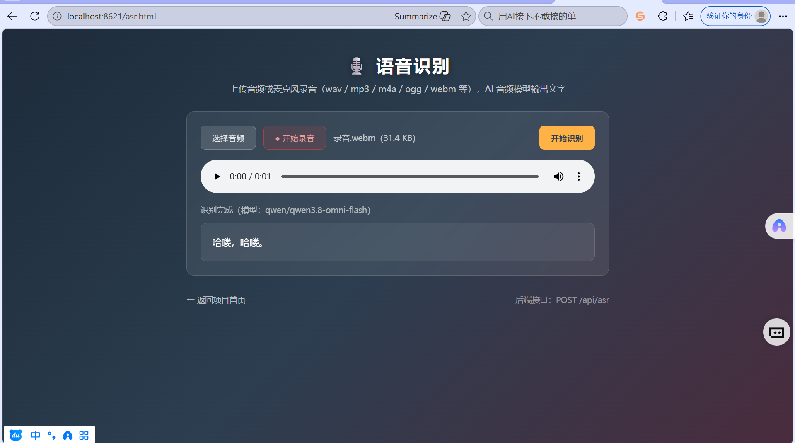

姓名：陈茹 · 学号：24002120621 · 使用模型：GLM-5.3-Flash ｜ 项目地址：localhost:8621 ｜ 每个板块下方附实测截图
美食街项目的在线客服，聚焦营业时间、招牌菜、配送范围三类问题，其他问题引导留言转人工。实测提问"你们几点营业"，AI 按知识库口径回答周一至周日 10:00–22:00，最后点单 21:30，并附【硅基流动】来源标注；支持清空对话。

美食平台悦厨的通用客服，覆盖平台使用、菜谱做法、售后问题。实测提问"红烧肉的肉选哪个部位好？"，AI 分点推荐下五花肉（腹部）与上五花（靠背部）并说明肥瘦层次与口感差异；底部提供猜你想问快捷追问按钮，支持清空对话。

上传文档（txt / doc / docx / ppt / pptx）解析为知识块，构建专属知识库；AI 仅依据知识库内容回答，并标注引用来源与命中数量。实测上传4 个文件共解析出 27 个知识块（含 22组-短视频账号脚本.docx 解析出 10 块）；提问"会员积分怎么兑换"，AI 按知识库口径回答每消费 1 元累计 1 积分，1000 积分可兑换 30 元无门槛代金券，引用标注"中华美食街门店手册.txt（命中 6）"。


上传图片（jpg / png / webp / gif，≤8MB），AI 视觉模型返回图片内容描述。实测上传"重生千金"四格剧照，模型 Qwen/Qwen3-VL-8B-Instruct 逐格描述画面：黑裙女主立于宴会中央气场强大、银色铠甲忧郁神情、泪眼凝望、金发女子举杯惊艳，并总结"色调金红交织、灯光璀璨、氛围华丽而戏剧化"。

上传音频或用麦克风直接录音（wav / mp3 / m4a / ogg / webm），AI 语音模型输出识别文字。实测点击"开始录音"录制 1 秒 webm 音频（31.4 KB），模型 qwen/qwen3.8-omni-flash 识别完成，输出文字"哈喽，哈喽。"，页面内可直接回放录音核对。
